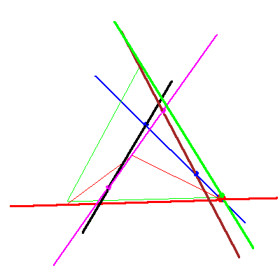

The problem of four lines in P3


The problem of four lines in P3 |
|
|  |
In this fifth stage of the specialization sequence, nothing happens to either solution line. For the first solution the checkers are in case (no,no) of Table2/Figure 8 of GLR, and the red checkers stay. For the second solution the checkers are in case (yes,yes) of Table 2/Figure 8, and a lot happens to the red checkers. |
 
|